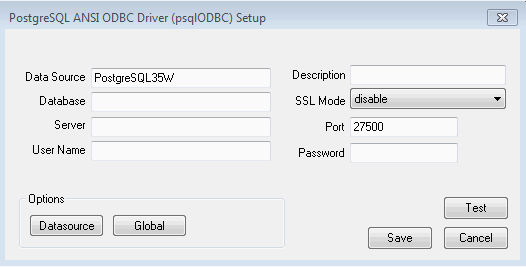

This section describes how to register ODBC data sources.
There are the following two ways to register ODBC data sources on Windows(R).
This section describes how to start the [ODBC Data Source Administrator] and register ODBC data sources.
Use the following procedure to register ODBC data sources:
Start the [ODBC Data Source Administrator].
Select [Start] >> [Control Panel] >> [Administrative Tools] >> [ODBC Data Source Administrator].
Note
To register data sources for 32-bit applications in Windows(R) for 64-bit, execute the ODBC administrator (odbcad32.exe) for 32-bit, as shown below.
%SYSTEMDRIVE%\WINDOWS\SysWOW64\odbcad32.exe
When only the current user is to use the ODBC data source, select [User DSN]. When all users using the same computer are to use the ODBC data source, select [System DSN].
Click [Add].
Select one of the following drivers from the list of available ODBC drivers displayed in [Create New Data Source], and then click [Finish]. The notation "x" indicates the version of the FUJITSU Enterprise Postgres client feature.
FUJITSU Enterprise Postgres Unicode x
Select this driver if using Unicode as the application encoding system.
FUJITSU Enterprise Postgres ANSI x
Select this driver if using other than Unicode as the application encoding system.
The [PostgreSQL ANSI ODBC Driver (psqlODBC) Setup] window is displayed. Enter or select the required items, then click [Save].

Set the following content:
Definition name | Setting value |
|---|---|
Data Source | Specify the data source name to be registered in the ODBC driver manager. The application will select the name specified here and connect with the FUJITSU Enterprise Postgres database. This parameter cannot be omitted. Specify the following characters up to 32 bytes.
|
Description | Specify a supplementary description for the current data source. Specify characters up to 255 bytes.
|
Database | Specify the database name to be connected. |
SSLMode | Specify to encrypt communications. The default is "disable". The setting values for SSLMode are as follows:
|
Server | Specify the host name of the database server to connect to, using up to 63 bytes. This parameter cannot be omitted. |
Port | Specify the port number to be used for remote access. The default value is "27500". |
Username*2 | Specify the user that will access the database. |
Password*2 | Specify the password for the user that will access the database. |
*1: If specifying either "verify-ca" or "verify-full", use the system environment variable PGSSLROOTCERT of your operating system to specify the CA certificate file as shown below.
Example:
Variable name: PGSSLROOTCERTVariable value: cACertificateFile
*2: In consideration of security, specify the Username and the Password by the application.
This section describes how to use commands to register ODBC data sources.
Use the following tools from Microsoft to register ODBC data sources.
ODBCConf.exe
Add-OdbcDsn
Refer to the Microsoft Developer Network (MSDN) Library for information on how to use these tools.
ODBCConf.exe is a tool supported on all Windows(R) platforms.
ODBCConf.exe /A { dataSourceType "odbcDriverName" "optionName=value[|optionName=value...]"} [/Lv fileName]Refer to the Microsoft MSDN library for information on the format and parameters.
Set the following content:
Definition name | Setting value |
|---|---|
Data source type | Specify the data source type.
Note When CONFIGSYSDSN is specified as the data source type, it is necessary to execute the command in the command prompt in administrator mode. |
ODBC driver name | Specify an ODBC driver name that has already been registered on the system. Specify one of the following. Note The placeholders shown below are enclosed in angle brackets '<>' to avoid confusion with literal text. Do not include the angle brackets in the string.
|
Option name | The following items must be set:
Specify the following values as required:
|
File Name | You can output process information to a file when creating a data source. This operand can be omitted. |
Example
ODBCConf.exe /A {CONFIGSYSDSN "FUJITSU Enterprise Postgres Unicode 12" "DSN=odbcconf1|Servername=sv1|Port=27500|Database=db01|SSLMode=verify-ca"} /Lv log.txtNote
In consideration of security, specify the UID and the Password by the application.
Add-OdbcDsn is used in the PowerShell command interface.
Add-OdbcDsn dataSourceName -DriverName "odbcDriverName" -DsnType dataSourceType -Platform oSArchitecture -SetPropertyValue @("optionName=value" [,"optionName=value"...])
Refer to the Microsoft MSDN library for information on the format and parameters.
Set the following content:
Definition name | Setting value |
|---|---|
Data source name | Specify any name for the data source name. |
ODBC driver name | Specify an ODBC driver name that has already been registered on the system. Specify one of the following. Note The placeholders shown below are enclosed in angle brackets '<>' to avoid confusion with literal text. Do not include the angle brackets in the string.
|
Data source type | Specify the data source type.
Note When System is specified as the data source type, it is necessary to execute the command in the administrator mode of the command prompt. |
OS architecture | Specify the OS architecture of the system.
|
Option name | The following items must be set:
Specify the following values as required:
Note When using Add-OdbcDsn, the strings "UID" and "Password" cannot be set as option names. These can only be used when using ODBCConf.exe. |
Example
Add-OdbcDsn odbcps1 -DriverName "FUJITSU Enterprise Postgres Unicode 12" -DsnType System -Platform 32-bit -SetPropertyValue @("Servername=sv1", "Port=27500", "Database=db01", "SSLMode=verify-ca")